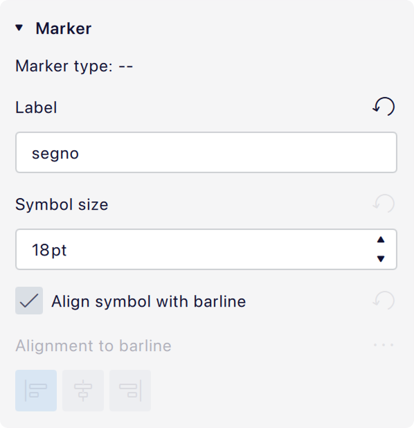

Jumps and markers
Jumps and markers are used to create repeat structures in a score. They can be found in the Repeats & jumps palette.
Types of jumps and markers
Jumps
Jumps are items that indicate a jump from one point in the score to somewhere else.
| D.C. | Repeat from the beginning (stands for for da capo). |
| D.S. | Repeat from the segno marker (stands for dal segno). |
| D.C. al Fine | Repeat from the beginning until 'Fine'. |
| D.S. al Fine | Repeat from the segno marker until 'Fine'. |
| D.C. al Coda | Repeat from the beginning until 'To Coda', then jump to the coda. |
| D.S. al Coda | Repeat from the segno marker until 'To Coda', then jump to the coda. |
Markers
Markers are labelled positions in the score. Coda and segno markers indicate the destination of a jump:
| Coda |
(with or without additional text) |
| Segno |  |

Fine and To Coda indicate the place where something should happen after a jump has been made:
| Fine | End the piece or section. This must be used together with a 'D.C. al Fine' or 'D.S. al Fine'. |
| To Coda | Jump to the coda. This must be used together with a 'D.C. al Coda' or 'D.S. al Coda'. |
Though the **'To Coda'** item is effectively both a marker _and_ a jump, internally it is treated as a marker and has the corresponding properties. The destination of the jump to the coda is specified in the 'D.C. al Coda' or 'D.S. al Coda' item (see [#jump-properties](%1), below).
Adding a jump or marker
To add a jump or marker to your score:
- Select a measure, or an item within the measure.
- Click the desired item in the Repeats & jumps palette.
Alternatively, drag an item from the palette and drop it onto the measure.
Coda and segno are placed at the beginning of the measure, and all other jumps and markers at the end.
Changing appearance of jumps and markers
Jumps and markers are text, so they are edited like any other text objects.
Markers often also contain music symbols (e.g. for segno and coda), which are taken from the musical text font the score is using. The size and alignment of these symbols can be controlled independently of the rest of the text in their properties.
To enter music symbols into these items, use the Special characters dialog (Properties -> Text -> Insert special characters).
Changing playback of jumps and markers
Using labels to define the flow of playback
Jumps and markers are connected using labels, which are simple text identifiers that define the flow of playback. For most scores, you should not need to change the default labels of jumps and markers that are added from palettes. See #example-of-how-labels-control-playback-flow.
To indicate the beginning or end of the score, this specific syntax must be used:
startis the beginning of the score or section.endis the end of the score or section.
Otherwise, the labels can be whatever you like, as long as they match up correctly. If you are creating more elaborate structures than the defaults allow, you can customize them in properties.
Labels do not display on the score and have no inherent relationship to the text that the item on the score may contain.
Ignoring jumps and markers in playback
To ignore repeats, jumps, and markers in playback:
- In the playback toolbar, open the cog menu
- Uncheck Play repeats
Jump properties

Default settings for 'D.S. al Coda'
- Jump to: The label of the marker that playback should jump to, once this jump is reached.
- Play until: The label of the marker where playback should continue until.
- Continue at: The label of the marker to jump to once the label specified in Play until is reached. If this field is blank, playback will stop at the Play until label.
- Play repeats: Whether to play repeats after the jump happens.
Example of how labels control playback flow
The image above shows the default settings for a 'D.S. al Coda'. It describes that the following should happen once it is reached:
- Jump to the marker with the label
segno(which is the default label of the segno item from the palette). - Play from that label until the marker with the label
coda(which is the default label of the 'To Coda' item from the palette). - Then jump to the marker with the
codab(which is the default label of the coda item from the palette).
Since Play repeats is unchecked, any repeats encountered after the initial jump will be ignored.
Marker properties

Default settings for 'Segno'
- Marker type: The type of marker (non-editable).
- Label: The marker's label. This should match one of the labels referenced in a jump, according to what purpose the marker serves.
- Symbol size: The size in points of any musical symbols (coda, segno, etc.) used as part of the text on the score.
- Align symbol with barline: If checked, and if the item contains a symbol, the entire item will be positioned such that the symbol is centered over the barline. If unchecked, the alignment buttons below become enabled and the desired alignment can be chosen.
Jump and marker style
The text styles for repeats and jumps can be configured in Format -> Style -> Text styles -> Repeat text left and Repeat text right. The Repeat text left style is used for markers which go at the start of the bar (coda, segno), and the Repeat text right style is used for markers which go at the end (everything else).
The musical text font, used for the symbols, can be changed in Format -> Style -> Score -> Musical text font.